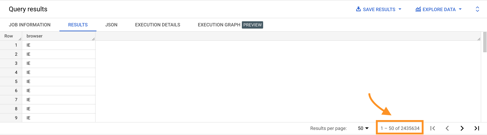

If we display the values of the browsers column in the events table, we get something like this:
SELECT browser
FROM bigquery-public-data.thelook_ecommerce.events;

We get more than 24 millions results!
What if we want to display the list of the different browsers that show up in the events table but without duplicates? Each browser should appear only once. In this case, we need to use the DISTINCT keyword with our SELECT clause.
SELECT DISTINCT browser
FROM bigquery-public-data.thelook_ecommerce.events;
We can also use several columns in our SELECT DISTINCT statement. When doing this, only unique combinations of the selected column values will be returned:
SELECT DISTINCT browser,
traffic_source
FROM bigquery-public-data.thelook_ecommerce.events;
We can use DISTINCT to count unique values.
SELECT COUNT(browser) AS browser,
COUNT(DISTINCT browser) AS unique_browsers
FROM bigquery-public-data.thelook_ecommerce.events;
| browser | unique_browsers |
|---|---|
| 2424442 | 5 |
bigquery-public-data.thelook_ecommerce.orders
Write a query that will display the number of unique users that have made a purchase.
| unique_customers |
|---|
| 80174 |
SELECT COUNT(DISTINCT user_id) AS unique_customers
FROM bigquery-public-data.thelook_ecommerce.orders;
bigquery-public-data.thelook_ecommerce.users
Write a query that will display the list of unique countries the users are coming from.
SELECT DISTINCT CASE
WHEN country = 'España' THEN 'Spain'
WHEN country = 'Deutschland' THEN 'Germany'
ELSE country
END AS clean_country
FROM bigquery-public-data.thelook_ecommerce.users;
bigquery-public-data.thelook_ecommerce.orders
Write a query that will display the average number of orders by unique customer.
| avg_orders_per_unique_customer |
|---|
| 1.5658442886721382 |
SELECT COUNT(order_id) / COUNT(DISTINCT user_id) AS avg_orders_per_unique_customer
FROM bigquery-public-data.thelook_ecommerce.orders;
bigquery-public-data.ga4_obfuscated_sample_ecommerce.events_20210131
Write a query that shows:
| checkout_starters | buyers | checkout_conversion_rate |
|---|---|---|
| 54 | 17 | 31.481481481481481 |
SELECT COUNT(DISTINCT(CASE WHEN event_name = 'begin_checkout' THEN user_pseudo_id END)) AS checkout_starters,
COUNT(DISTINCT(CASE WHEN event_name = 'purchase' THEN user_pseudo_id END)) AS buyers,
(COUNT(DISTINCT(CASE WHEN event_name = 'purchase' THEN user_pseudo_id END))
/ COUNT(DISTINCT(CASE WHEN event_name = 'begin_checkout' THEN user_pseudo_id END))) * 100
AS checkout_conversion_rate
FROM bigquery-public-data.ga4_obfuscated_sample_ecommerce.events_20210131;
bigquery-public-data.ga4_obfuscated_sample_ecommerce.events_20210131
Write a query that shows:
| platform | checkout_starters | buyers | checkout_conversion_rate |
|---|---|---|---|
| WEB | 54 | 17 | 31.481481481481481 |
SELECT platform,
COUNT(DISTINCT(CASE WHEN event_name = 'begin_checkout' THEN user_pseudo_id END)) AS checkout_starters,
COUNT(DISTINCT(CASE WHEN event_name = 'purchase' THEN user_pseudo_id END)) AS buyers,
(COUNT(DISTINCT(CASE WHEN event_name = 'purchase' THEN user_pseudo_id END))
/ COUNT(DISTINCT(CASE WHEN event_name = 'begin_checkout' THEN user_pseudo_id END))) * 100
AS checkout_conversion_rate
FROM bigquery-public-data.ga4_obfuscated_sample_ecommerce.events_20210131
GROUP BY platform;
bigquery-public-data.thelook_ecommerce.events
Write a query that shows:
| firefox_home_unique_user_traffic | home_unique_user_traffic | firefox_share_of_home_unique_user_traffic |
|---|---|---|
| 16399 | 63134 | 25.974910507808787 |
SELECT COUNT(DISTINCT(CASE WHEN event_type = 'home' AND browser = 'Firefox' THEN user_id END))
AS firefox_home_unique_user_traffic,
COUNT(DISTINCT(CASE WHEN event_type = 'home' THEN user_id END)) AS home_unique_user_traffic,
(COUNT(DISTINCT(CASE WHEN event_type = 'home' AND browser = 'Firefox' THEN user_id END))
/ COUNT(DISTINCT(CASE WHEN event_type = 'home' THEN user_id END))) * 100
AS firefox_share_of_home_unique_user_traffic
FROM bigquery-public-data.thelook_ecommerce.events;